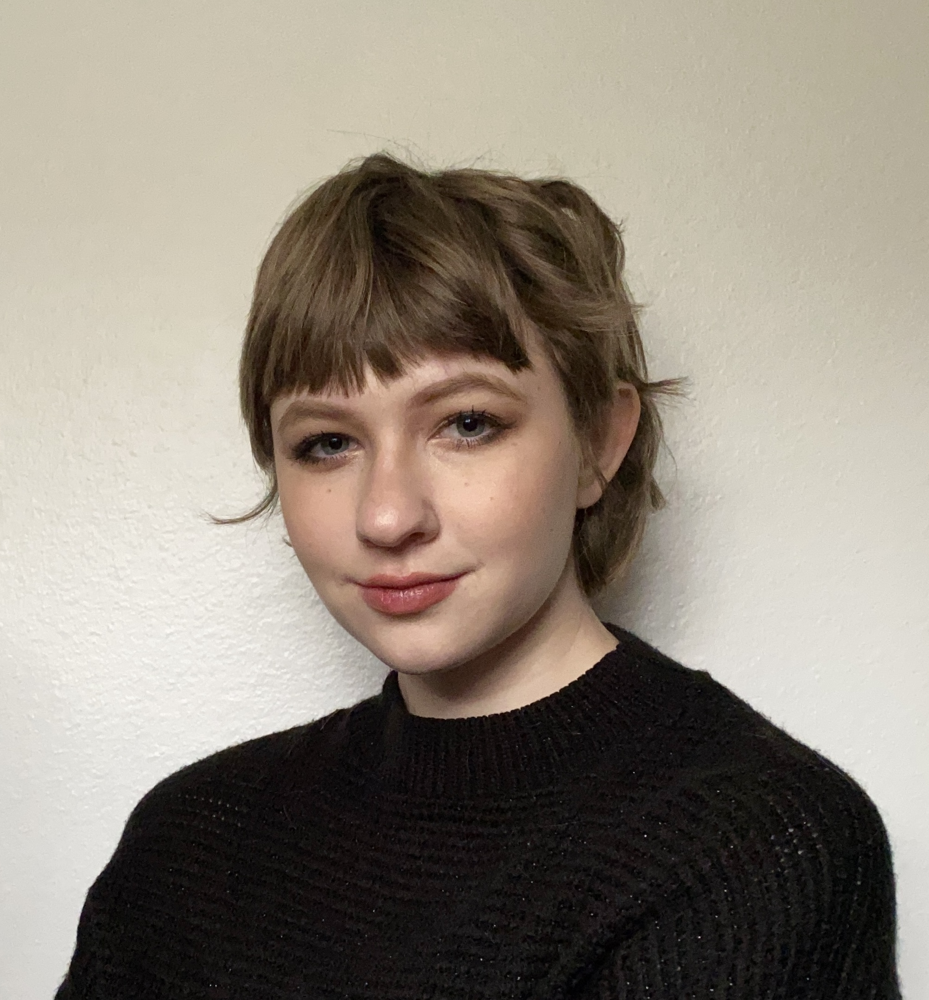
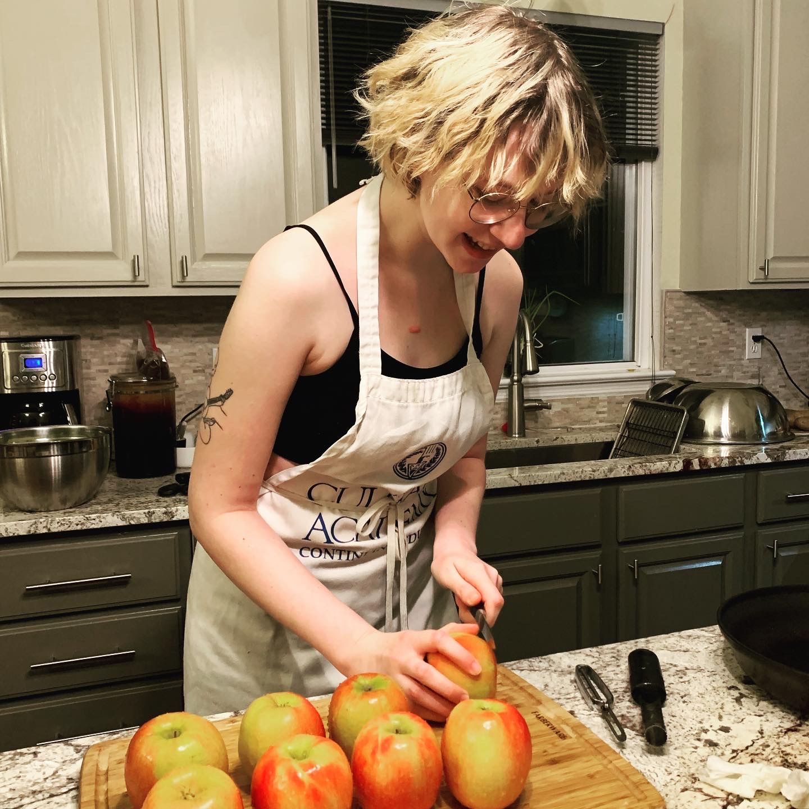

Aside from my studies, I am also a model for the 2022 Walk It Out fashion show, representing the LGBTQ+ culture as a dancer. I like to stay active in creative ways by walking from my apartment to my classes, dancing during my bi-weekly rehearsal times, and lifting boxes at my baker job at Insomnia cookies.
I am also a Certified Peer Educator for the Women's Resource and Action Center, where I lead workshops for students at the University of Iowa and act as a leader in preventing violence in my community as a confidential resource for victims.
And in my free time I enjoy artistic expression through drawings and makeup! I have been a sole proprietor on social media as a freelance artist for about a year, though I've been serving the St. Louis artistic community since 2016 as a commissions artist. I also enjoy experiencing different cultures through baking and cooking. Since my mother is a food scientist, I am always looking for new, healthy cuisine to satisfy my cravings!
 